SDN Kebonagung 1 Sukodono
Mewujudkan generasi yang berkarakter, berprestasi dan berwawasan lingkungan.
Data Sekolah
Informasi singkat SDN Kebonagung 1 Sukodono
22
Guru & Tenaga Kependidikan
320
Jumlah Siswa
15+
Sarana & Prasarana
A
Akreditasi Sekolah
Sarana & Prasarana
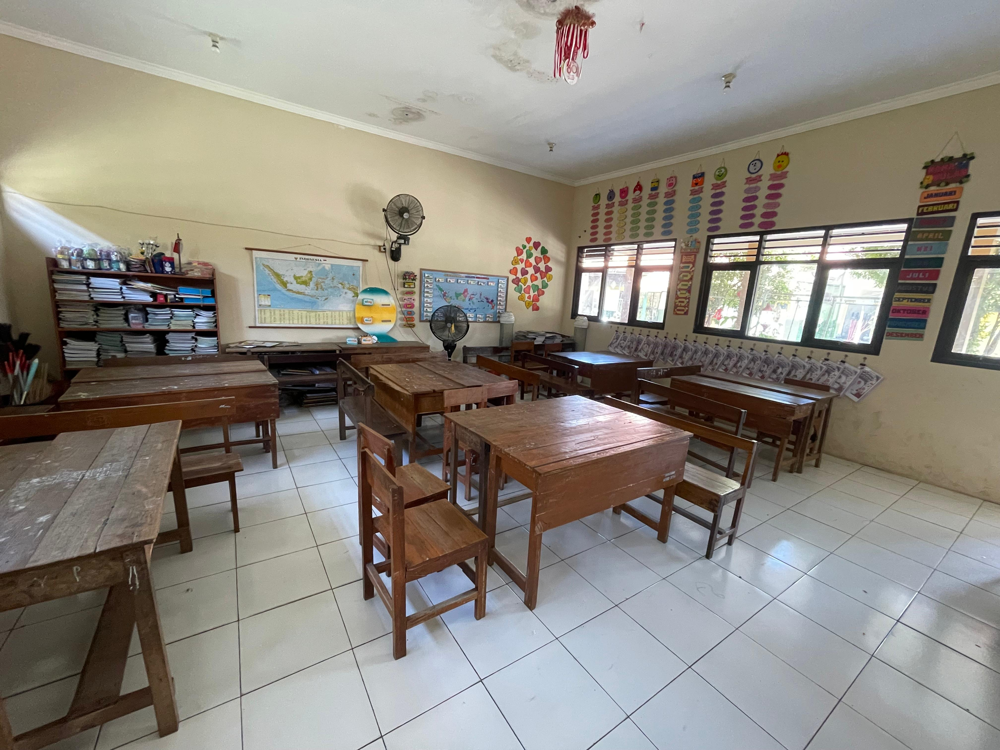
Ruang Kelas
Ruang belajar yang nyaman untuk mendukung kegiatan pembelajaran.
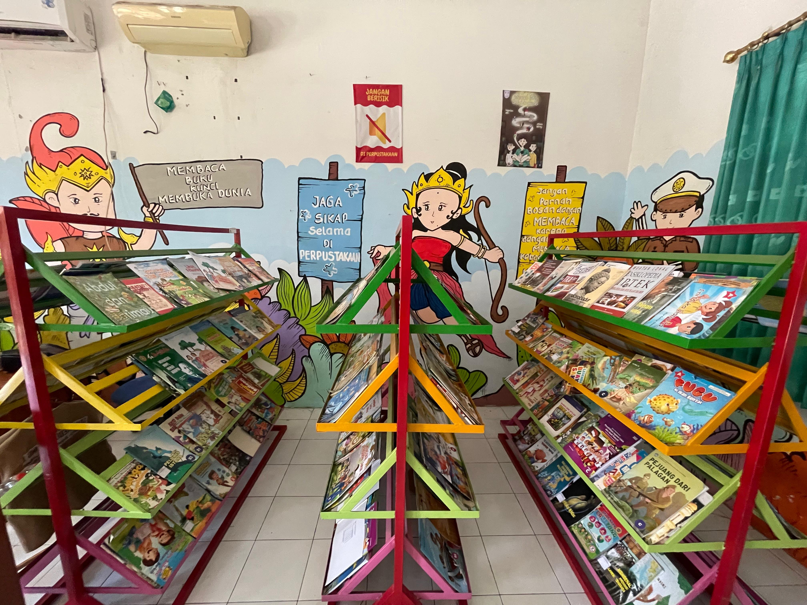
Perpustakaan
Tempat peserta didik membaca dan mengembangkan budaya literasi.
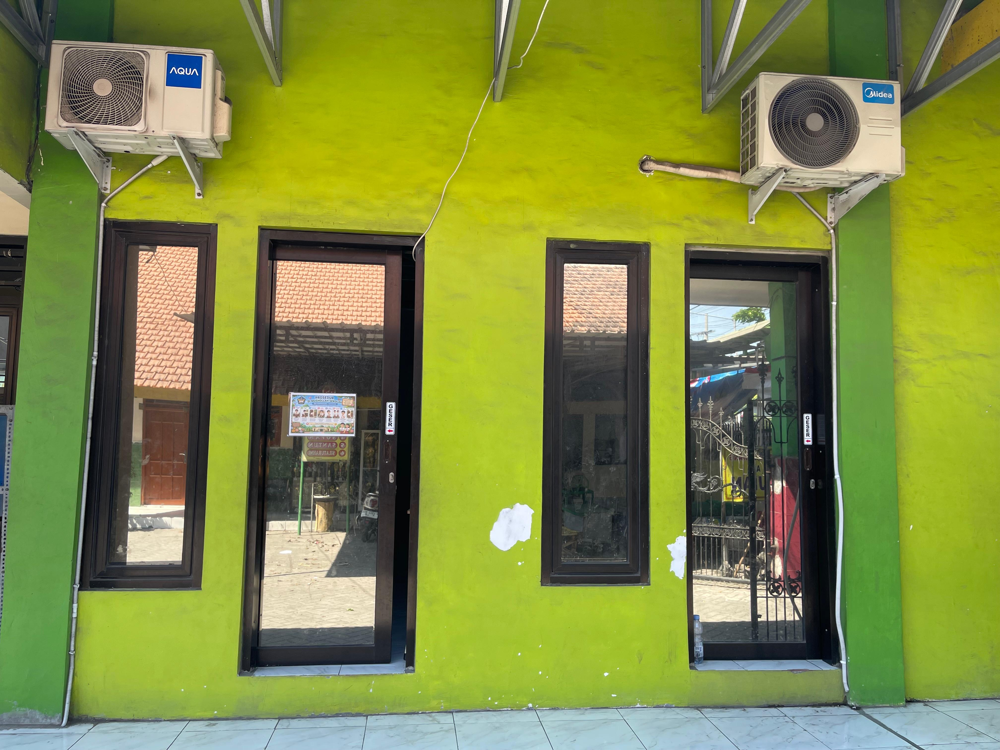
Musholla
Sarana pembiasaan kegiatan keagamaan warga sekolah.
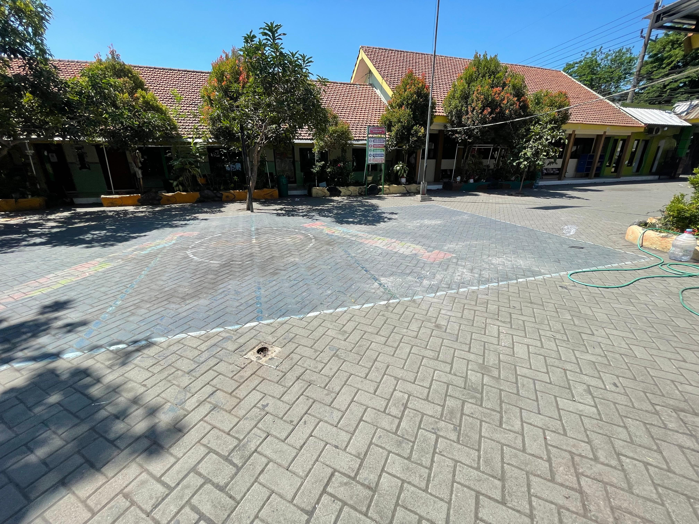
Lapangan Sekolah
Digunakan untuk olahraga, upacara dan berbagai kegiatan sekolah.
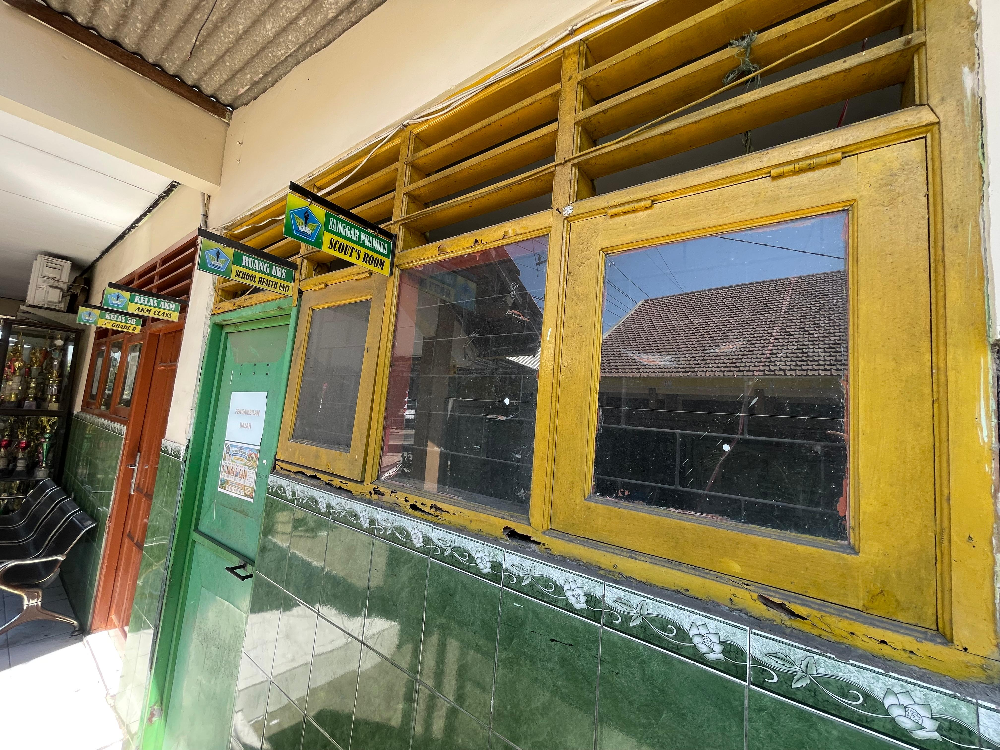
UKS
Fasilitas pendukung kesehatan peserta didik.
Sanggar Pramuka
Fasilitas pembelajaran berbasis teknologi informasi.
Akreditasi Sekolah
SDN Kebonagung 1 Sukodono berkomitmen menjaga mutu pendidikan dan pelayanan sekolah secara berkelanjutan.
A
Kepegawaian
Portal layanan ASN, GTK dan kepegawaian
E-Buddy
Sistem informasi kepegawaian Kabupaten Sidoarjo untuk pengelolaan data ASN Sidoarjo.
Buka E-Buddy →MyASN
Portal layanan ASN Digital dari BKN untuk akses informasi kepegawaian nasional.
Buka MyASN →Smart ASN
Sistem cerdas untuk pengelolaan ASN di lingkungan Pemerintah Kabupaten Sidoarjo.
Buka Smart ASN →Ruang GTK
Platform pengembangan profesi dan komunitas untuk Guru dan Tenaga Kependidikan.
Buka Ruang GTK →KTA PGRI
Kartu Tanda Anggota Digital PGRI untuk verifikasi keanggotaan organisasi guru.
Buka KTA PGRI →TAPERA
Tabungan Perumahan Rakyat untuk program pembiayaan rumah bagi ASN dan pensiunan.
Buka TAPERA →SIPEKAT
Sistem Pelaporan Ketenagakerjaan untuk pengelolaan data ketenagakerjaan Kabupaten Sidoarjo.
Buka SIPEKAT →Profil Sekolah

Mei Ernawati, S.Pd., M.Pd.
Kepala SD Negeri Kebonagung 1 Sukodono
Sambutan Kepala Sekolah
Assalamu’alaikum Warahmatullahi Wabarakatuh
Salam sejahtera untuk kita semua. Selamat datang di Website Resmi SD Negeri Kebonagung 1 Sukodono. Puji syukur ke hadirat Allah SWT atas limpahan rahmat dan karunia-Nya sehingga Website Resmi SD Negeri Kebonagung 1 Sukodono dapat hadir sebagai media informasi, komunikasi, dan publikasi bagi seluruh warga sekolah serta masyarakat.
Dengan penuh rasa syukur dan bangga, saya menyambut Bapak, Ibu, serta seluruh pengunjung website ini. Kehadiran website sekolah merupakan salah satu bentuk komitmen kami dalam memberikan pelayanan pendidikan yang terbuka, informatif, serta mengikuti perkembangan teknologi di era digital.
SD Negeri Kebonagung 1 Sukodono memiliki visi untuk mewujudkan sekolah yang berkarakter, berprestasi, dan berwawasan lingkungan. Visi tersebut menjadi landasan dalam setiap langkah kami untuk membentuk peserta didik yang tidak hanya unggul dalam bidang akademik maupun nonakademik, tetapi juga memiliki akhlak mulia, disiplin, tanggung jawab, peduli terhadap sesama, serta mencintai dan menjaga kelestarian lingkungan.
Melalui berbagai program pembelajaran, penguatan pendidikan karakter, pengembangan bakat dan minat, serta pembiasaan budaya peduli lingkungan, kami terus berupaya menciptakan suasana belajar yang aman, nyaman, menyenangkan, dan inspiratif.
Kami percaya bahwa keberhasilan pendidikan merupakan hasil sinergi antara sekolah, orang tua, masyarakat, dan seluruh pemangku kepentingan. Website ini kami hadirkan sebagai jendela informasi yang memuat profil sekolah, visi dan misi, program unggulan, prestasi, kegiatan sekolah, serta berbagai informasi penting lainnya.
Besar harapan kami, website ini dapat menjadi sarana komunikasi yang efektif sekaligus mempererat kerja sama antara sekolah dengan seluruh masyarakat.
Kami mengucapkan terima kasih kepada seluruh guru, tenaga kependidikan, peserta didik, orang tua, komite sekolah, alumni, dan semua pihak yang telah memberikan dukungan dan kontribusi bagi kemajuan SD Negeri Kebonagung 1 Sukodono.
Semoga kebersamaan dan kolaborasi yang terjalin senantiasa membawa sekolah ini menjadi lembaga pendidikan yang unggul, berkarakter, berprestasi, dan berwawasan lingkungan.
Akhir kata, kami mengajak seluruh pengunjung untuk mengenal lebih dekat SD Negeri Kebonagung 1 Sukodono melalui website ini. Semoga informasi yang kami sajikan dapat memberikan manfaat serta menjadi inspirasi dalam mewujudkan pendidikan yang berkualitas bagi generasi penerus bangsa.
Wassalamu’alaikum Warahmatullahi Wabarakatuh.
Salam Hangat,
Mei Ernawati, S.Pd., M.Pd.
Kepala SD Negeri Kebonagung 1 Sukodono
🎯 Visi Sekolah
Terwujudnya generasi yang berkarakter, berprestasi dan berwawasan lingkungan.
🚀 Misi Sekolah
- Mengaktualisasikan ajaran agama dengan konsekuen.
- Mewujudkan pembelajaran berkualitas dan menyenangkan.
- Mewujudkan sekolah adiwiyata yang berkearifan lokal.
- Mewujudkan siswa berprestasi akademik dan non akademik.
Guru & Tenaga Kependidikan
Tim pendidik profesional yang berkomitmen untuk pendidikan berkualitas
Mei Ernawati, S.Pd., M.Pd.
Kepala Sekolah

Ratna Dewi Ramayanti, S.Pd
Guru Kelas 1A

Sumarlik, S.Pd
Guru Kelas 1B

Hena Dia Ayu Amaliyah, S.Pd
Guru Kelas 2A

Arifin Rahmad, S.Pd
Guru Kelas 2B

Eny Suprihatin, S.Pd
Guru Kelas 3A

Ulil Nur Qomariyah, S.Pd
Guru Kelas 3B

Ika Aristianti, S.Pd
Guru Kelas 4A

M. Masy'aril Kirom, S.Pd
Guru Kelas 4B

Muhammad Handoyo S.Pd., M.Pd
Guru Kelas 5A

Eko Fatmawati, S.Pd
Guru Kelas 5B

Diana Eka Dea Prihastiwi S.Pd
Guru Kelas 6A

Felina Devi Cacilia, S.Pd
Guru Kelas 6B

Nafi'ah Wilda Zarkasi, S.Pd
Guru PAI Kelas 1-3

Moch. Choirul Mahdi, S.Pd.I
Guru PAI Kelas 4-6
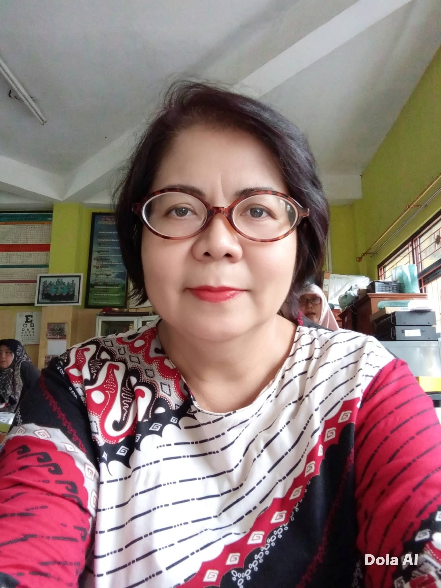
Selvy Marjam Magdalena S.Pd
Guru PAK Kelas 1-6

Richa Putri Agustina, S.Pd
Guru PJOK Kelas 1-3

Yogi Dwi Hariyanto, S.Pd
Guru PJOK Kelas 4-6

Iin Indrawati, S.Pd
Guru TIK Kelas 1-6

Romzul Wahtonik, S.E.
Administrasi Sekolah

Samsul Arif
Petugas Kebersihan

Yadi Mustofa
Penjaga Keamanan
Kabar Berita
Berita dan kegiatan terbaru SDN Kebonagung 1 Sukodono

🏕️ Hari Jadi Sidoarjo ke-167
Membangun kemandirian, kepemimpinan, kedisiplinan dan karakter siswa.
(Sabtu 31 januari 2026).
Baca selengkapnya →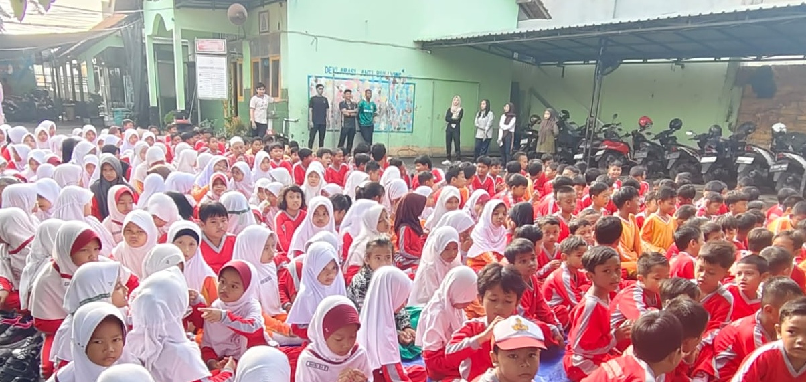
🏕️ Program Adiwiyata di SDN Kebonagung 1
wujud nyata komitmen sekolah dalam menjaga kebersihan.
(Kamis, 12 Februari 2026).
Baca selengkapnya →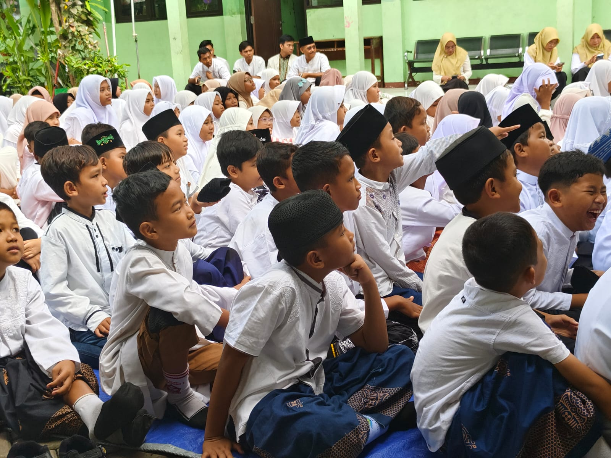
🏕️ Pembukaan pesantren ramadhan
pembukaan Pesantren Ramadan di SDN Kebonagung 1 Sukodono.
(Rabu 25 Februari 2026).
Baca selengkapnya →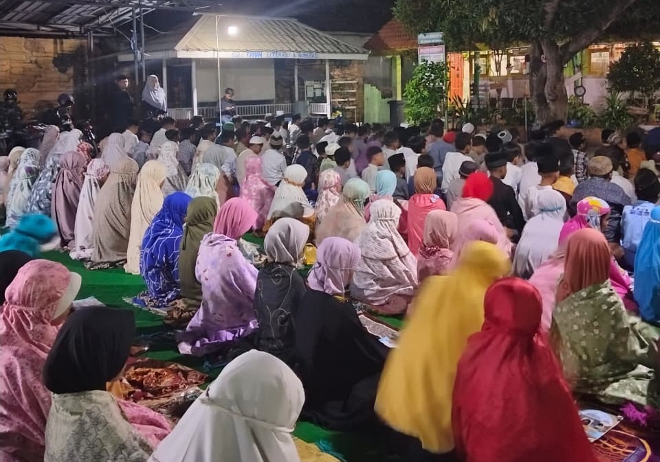
🏕️ Penutupan pesantren ramadhan
Kegiatan Pesantren Ramadhan telah resmi ditutup.
(Jum'at, 13 Maret 2026).
Baca selengkapnya →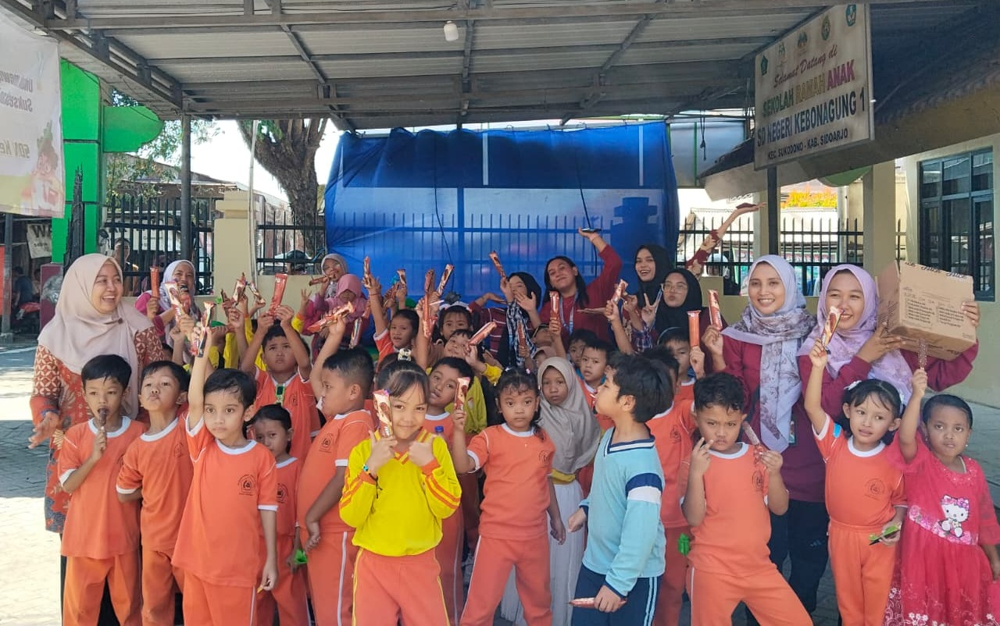
🏕️ One Day With SDN Kebonagung 1
Tawa riang dan semangat anak-anak pecah di SDN Kebonagung I.
(Sabtu 25 April 2026).
Baca selengkapnya →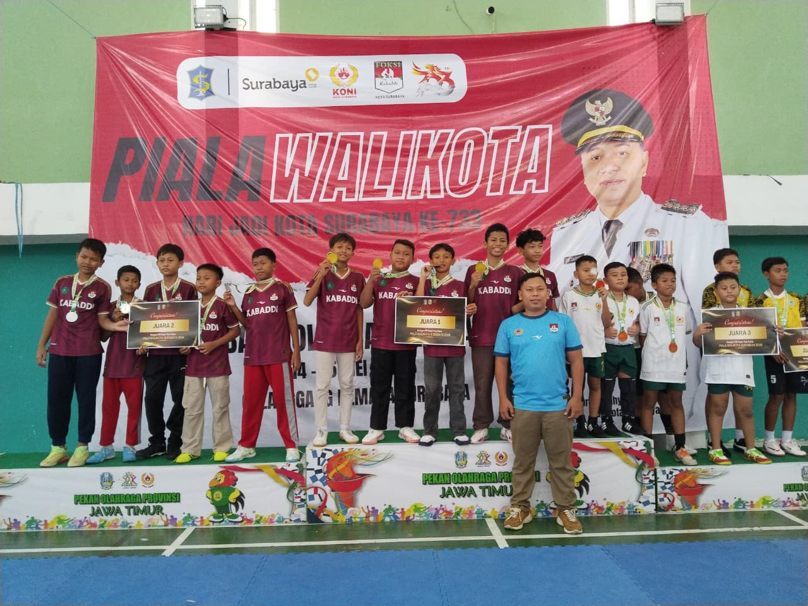
🏕️ Kabaddi SDN Kebonagung 1
🔥 SDN Kebonagung 1 kembali menorehkan prestasi.
(14–15 Mei 2026).
Baca selengkapnya →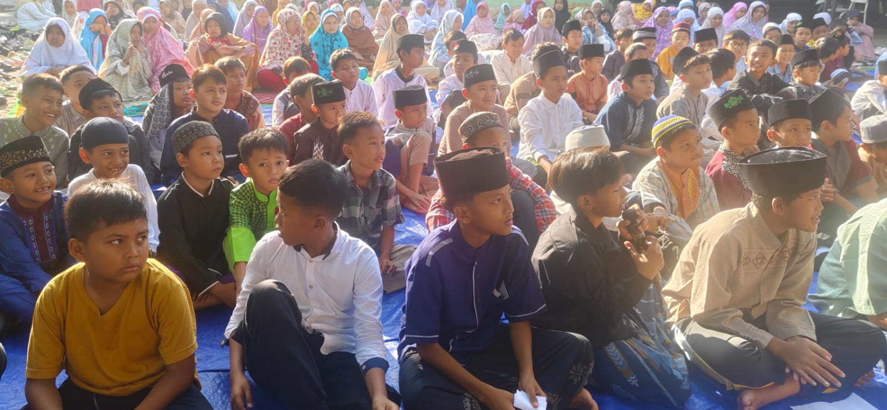
🏕️ Peryaan Idhul Adha
Dalam rangka memperingati Hari Raya Idul Adha, SDN Kebonagung 1 Sukodono melaksanakan.
(Sabtu, 30 Mei 2026).
Baca selengkapnya →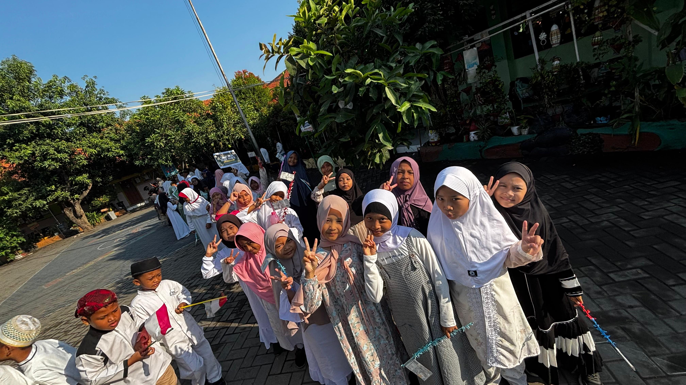
🏕️ Perayaan 1 Muharram 1448H
Tahun Baru Islam 1 Muharram 1448 H di SDN Kebonagung 1.
(Rabu, 17 Juni 2026).
Baca selengkapnya →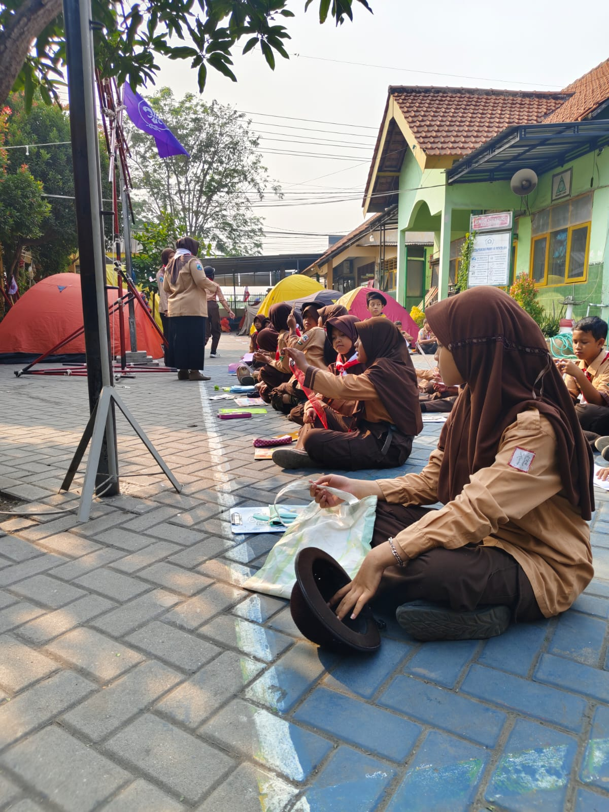
🏕️ Pramuka Lomba Tingkat 1
kembali menghadirkan kegiatan kepramukaan yang penuh semangat .
(jum'at 31 Juli 2026).
Baca selengkapnya →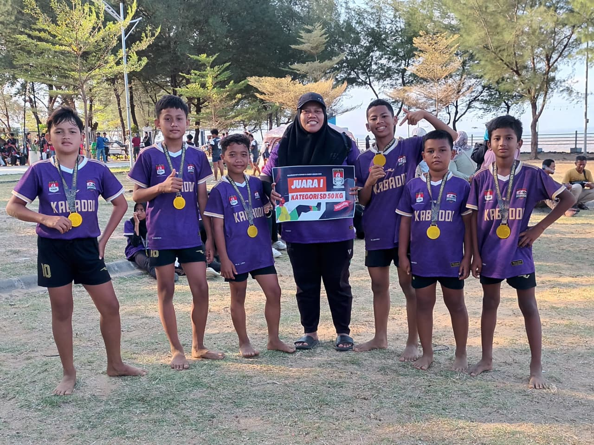
🏕️ Kejuaraan Kabaddi
Kabar membanggakan kembali hadir dari SDN Kebonagung 1 Sukodono.
(1-2 Agustus 2026).
Baca selengkapnya →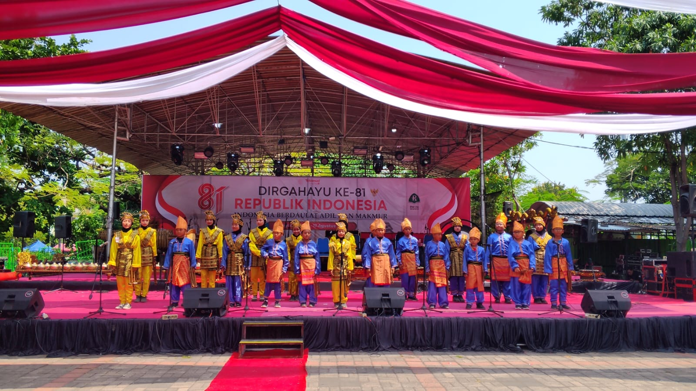
🏕️ Lomba Angklung
SDN Kebonagung 1 menunjukkan kemampuan terbaiknya dalam ajang Lomba Angklung Tingkat Sekolah Dasar se-Surabaya dan Sidoarjo .
(Sabtu, 15 Agustus 2026).
Baca selengkapnya →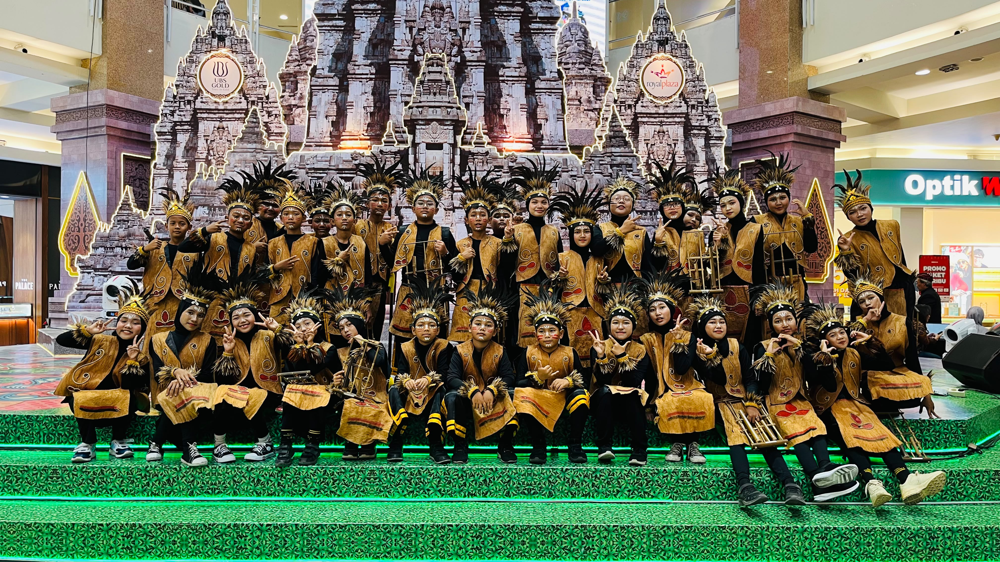
🏕️ Lomba Angklung
Alunan angklung kembali menggema membawa semangat dan kebanggaan keluarga besar SDN Kebonagung 1 Sukodono.
(Minggu, 23 Agustus 2026).
Baca selengkapnya →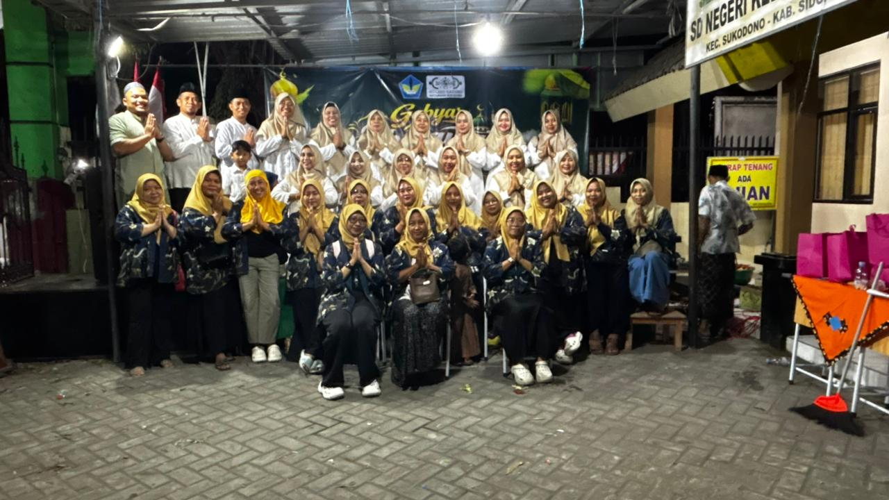
🏕️ Maulid nabi Muhammad SAW
Gebyar Sholawat dalam rangka menyemarakkan peringatan Maulid Nabi Muhammad SAW.
(Sabtu, 29 Agustus 2026).
Baca selengkapnya →.jpeg)
🏕️ kabaddi berita-kabaddi-sidoarjo
Sidoarjo kembali menorehkan prestasi membanggakan melalui cabang olahraga Kabaddi.
(Sabtu, 26 September 2026).
Baca selengkapnya →Ekstrakurikuler dan Club
Wadah pengembangan bakat, minat dan karakter peserta didik
🏕️ Pramuka
Membangun kemandirian, kepemimpinan, kedisiplinan dan karakter siswa.
🏆 Kabaddi
Mengembangkan kemampuan olahraga, kerja sama dan sportivitas.
💃 Seni Tari
Mengembangkan kreativitas dan kecintaan siswa terhadap budaya.
🕌 Banjari
Meningkatkan pemahaman tentang alat musik tradisional banjari.
⚽ Angklung
Meningkatkan pemahaman tentang alat musik tradisional angklung.
Galeri Sekolah
Dokumentasi kegiatan SDN Kebonagung 1 Sukodono
Layanan Informasi
Informasi dan dokumen pelayanan SDN Kebonagung 1 Sukodono
Legalisir Dokumen
Informasi layanan legalisir dokumen sekolah, ijazah dan dokumen pendidikan lainnya.
Lihat Informasi →SPMB
Informasi Sistem Penerimaan Murid Baru dan ketentuan pendaftaran peserta didik.
Lihat Informasi →Formulir Layanan
Formulir pelayanan yang dapat digunakan oleh warga sekolah dan masyarakat.
Lihat Formulir →Pengumuman
Informasi resmi dan pengumuman terbaru dari SDN Kebonagung 1 Sukodono.
Lihat Pengumuman →PPID / Informasi Publik
Informasi publik dan dokumen sekolah yang dapat diakses masyarakat.
Lihat Informasi →Kontak Sekolah
Informasi kontak dan media komunikasi resmi SDN Kebonagung 1 Sukodono.
Hubungi Kami →Layanan Sekolah
Informasi berbagai layanan administrasi dan pelayanan pendidikan sekolah.
Lihat Layanan →